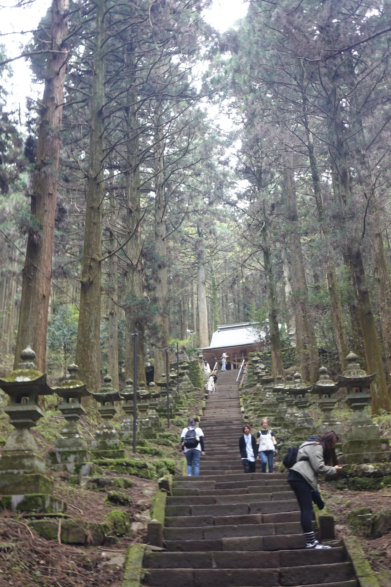
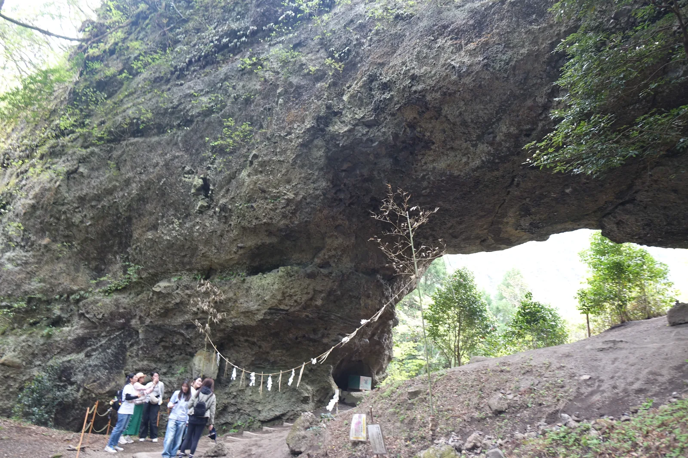
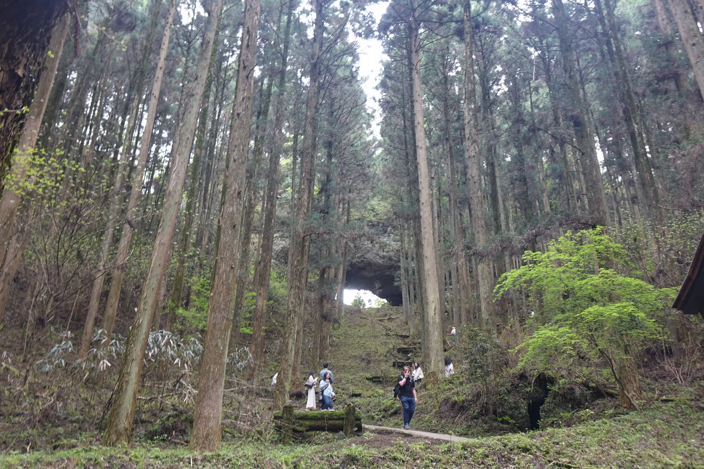
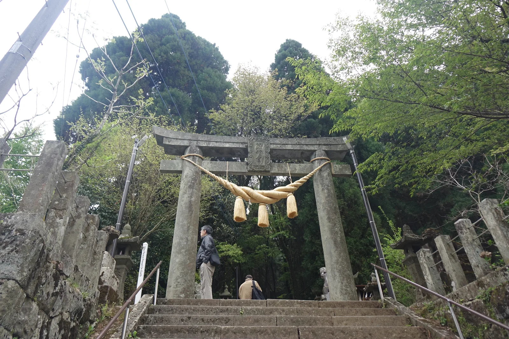
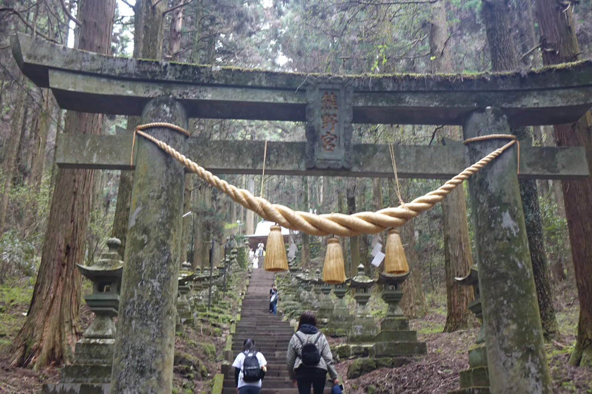
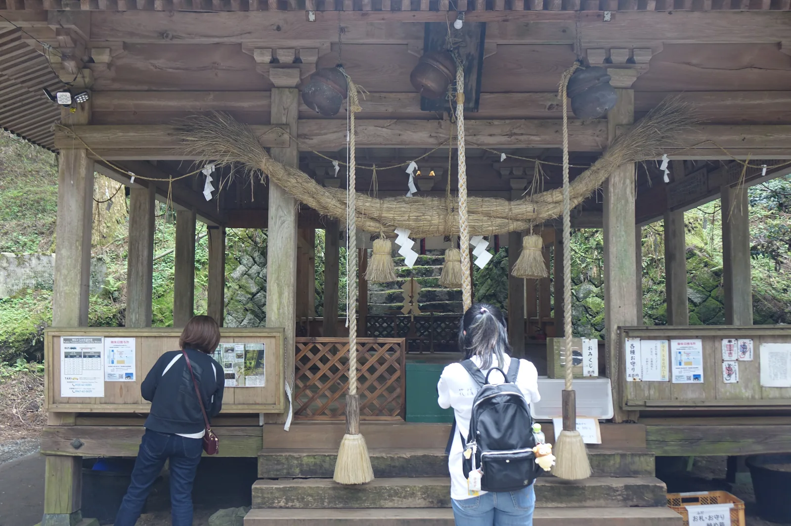
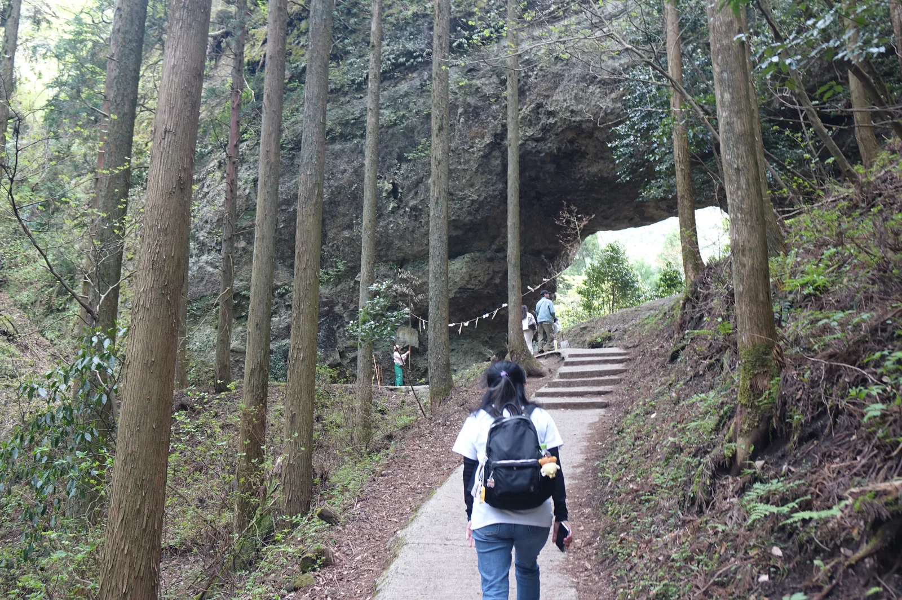
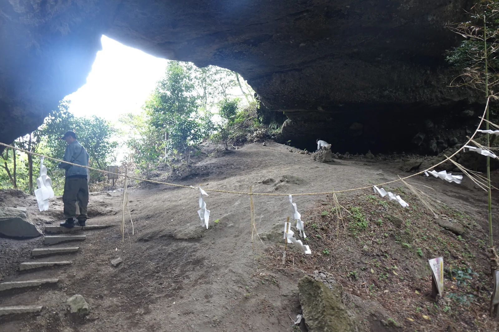
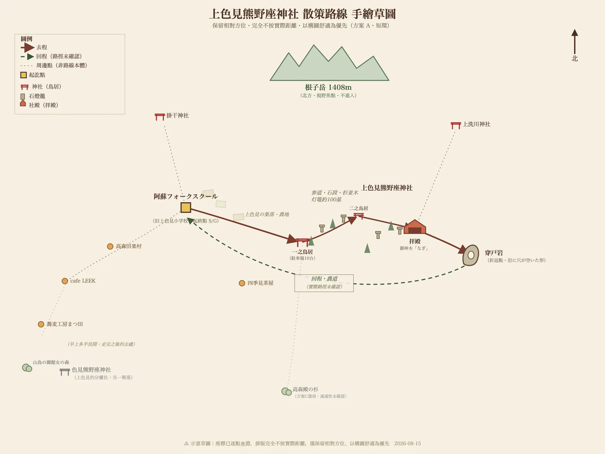

⛩ 神社寺廟散策 · 熊本県・阿蘇郡高森町上色見 · 2025-04
上色見熊野座神社
上色見熊野座神社かみしきみくまのざじんじゃ
- 祭神
- 伊邪那岐命・伊邪那美命・石君大将軍
- 社格
- 旧村社・南郷谷総鎮守
早上出門，從一所廢校開始走。
上色見是熊本往宮崎路上的一個小地區，夾在阿蘇外輪山的南麓與往高千穂的道路之間。 官方在這裡畫了一條約 6 公里的散步路線，起點是舊上色見小學校的木造校舍—— 學校廢了，房子留著。從那裡走出去，先經過集落的家並與農地， 右手邊一直是根子岳鋸齒狀的稜線；接著路轉進森林，杉木高起來， 兩側開始出現石燈籠，將近一百基，一路排到看不見盡頭的地方。
石段的終點是一座沒有牆的拜殿。但那還不是這趟路的終點—— 再往上，石段換成土坡與林間的窄路，一塊巨大的岩壁被穿了一個洞。
石燈籠、鳥居、拜殿——整條路都是為了把人送到這塊石頭下面。 而那塊石頭，比它們任何一個都老。

岩體信仰先於祭神之認定
這座社的創建年代不詳，只知道創祀相當早。上色見的大村一帶發現過不少四、五世紀的古墳， 所以一般認為，早在有社殿、有祭神名字之前，這裡的人就已經在拜那塊岩了。 被拜的不是神像也不是建築，是那個洞本身——一塊尊貴的磐、一個稀有的岩穴。
那塊岩叫穿戸岩（Ugeto-iwa，被踢穿一個大洞的岩壁），縱橫都超過十公尺。它怎麼來的， 當地的說法跟阿蘇最有名的一則神話綁在一起。

阿蘇大神健磐龍命（Takeiwatatsu-no-mikoto）是射箭的高手，喜歡從阿蘇山頂往外放箭。 他的從者鬼八（Kihachi）負責撿箭， 撿到第九十九支已經煩透了，第一百支索性用腳趾夾著扔了回去。 健磐龍命大怒——一個家臣竟敢把主人的箭踢回來——追殺鬼八。 阿蘇四面環山，鬼八怎麼跑都跑不出去，想翻過上色見這一側的外輪山時被岩壁擋住， 於是他一腳把岩壁踢穿，從洞裡逃了出去。那個洞就是穿戸岩。
鬼八沒有停在這裡。他在冬野也留下一個穿戸；後來被追上時，朝著健磐龍命連放了八個屁才脫身， 那個地方就叫矢部。最後他在高千穂被抓到，斬首。 首級升天成了怨靈，每年一到暑熱時就降霜害莊稼。健磐龍命去求它別再降霜， 怨靈說：「天冷的時候斷掉的脖子會痛得受不了。你讓我暖和，我就不作亂。」 於是阿蘇宮附近建了霜宮（Shimomiya，供奉鬼八之靈的社），年年焚火供暖，霜害才停。
上色見、冬野、矢部、高千穂、阿蘇霜宮——一則逃亡的故事把阿蘇繞了一整圈。 這樣看，穿戸岩是那條路線的第一個洞；往南四十分鐘車程， 高千穂神社 與 天岩戶神社 所在的高千穂，是最後一站。 那一天從這裡開到那裡，走的其實是同一則神話。
熊野的神是後來才進來的。鎌倉時代末到室町時代初期，熊野信仰擴散到九州， 修驗者把原有的山嶽信仰和岩石信仰結合起來， 把紀伊熊野三山的伊弉諾命、伊弉冉命（Izanagi・Izanami）兩位大神請到這裡祀奉， 這座社才成為「熊野座」（祀奉熊野之神的社）、成為熊野權現。也就是說， 先有岩，才有熊野；先有阿蘇的鬼八，才有紀州來的神。
兩者接合的地方在一則傳承裡：石君大将軍（Iwagimi-taishōgun）是健磐龍命的荒魂（aramitama，神的剛猛面向）， 有兩位神出現在石君大将軍的兜（頭盔）之中，那兩位就是熊野大神， 於是人們從紀州熊野把伊弉諾命與伊弉冉命遷來奉祀，這就是本社的創祀。 建社殿的時候，有兩隻大鳥叼著要獻神的榊枝（sakaki，供神用的常綠樹枝），停在阿蘇山東麓的這個洞窟上， 社殿便建在了那裡。此後這裡被稱作熊野穿戸岩社、穿戸岩権現、熊野宮， 據載是南郷谷（Nangō-dani，阿蘇南側的谷地）的總鎮守。
高森町官方記載的祭神是伊邪那岐命、伊邪那美命、石君大将軍三柱—— 阿蘇的荒魂和紀州來的兩位神並列在同一份名單上，那段接合的歷史就寫在祭神欄裡。
立地非屬偶然
決定這座社位置的不是神社，是那塊岩。
先有一塊被穿了洞的岩壁，被當成稀有之物拜了很久，人才把路鋪上去、把社殿蓋在它腳下。 這不是先選了一塊好地、再營造氣氛的神社。 現在的神殿座落在月形山（Tsukigata-yama）的八合目，而穿戸岩在神殿上方—— 整個配置是沿著山坡往上疊的，人在爬升的過程中一路走向那塊岩。

位置本身也有道理。上色見夾在阿蘇五岳之一的根子岳（Neko-dake，1408 公尺，山頂鋸齒狀的那座）山麓 與往高千穂的路之間。這條路是熊本與宮崎之間的通道， 而穿戸岩的傳說裡，鬼八正是沿著這個方向往高千穂逃的—— 神話走的路線和人走的路線是同一條。神社設在這條路旁邊，不是巧合。
參道從路邊的低處起步，一路往山裡爬。杉林把兩側封起來， 天光只從樹冠之間漏下來。走到拜殿時已經看不到來時的路， 再往上石段就沒了，換成土坡與沿著山腹整出來的窄路，然後岩壁才出現。 這段路的高低差和轉折，是這座社最重要的建築元素。
參道形制及其空間效果
參道兩側排著將近一百基石燈籠，苔痕遍布，看起來像積累了幾百年。 實際上只有最早的一對加一基來自元治元年（1864）與慶応三年（1867）， 其餘絕大多數是昭和三十年（1955）以後才陸續立起來的。 這條燈籠列的密度是戰後幾十年堆出來的，不是幾百年。
密集並列的燈籠把視線壓成一條隧道。人走在中間， 左右餘光全是重複的石造量體，注意力只剩下前方那條往上的石段。 這是很有效的手法——用重複來取消側向的選擇，讓路只剩一個方向。
兩座鳥居把長參道切成兩段，兩座都是石造的明神鳥居（myōjin torii，最常見的鳥居形式）， 都橫掛著注連縄（shimenawa，標示神域的稻草繩）。 入口那座立在縣道邊的石段上，中段那座藏在杉林深處，注連縄粗得多， 額束上的扁額刻著「熊野宮」。中間隔著一段石段，所以走的人會經歷「進來了 → 再進來一次」 兩次心理上的過門。鳥居的建立年代則說法不一：現有記載裡「明治三十年」與元治元年（1864）並存， 兩者相差三十餘年。


拜殿是四方吹き放ち（shihō-fukihanachi）——四面沒有牆的開放式構造，只有柱子撐著屋頂。 大注連縄橫過正面，三條鈴緒（suzuo，搖鈴用的粗繩）垂下來，配三個吊鐘。 站在拜殿裡，杉林和石段都還在視野中， 建築沒有把外面關掉，只是給了一個頂。它像一個框，不像一個房間。

拜殿後方有石段繼續往上。神殿是総欅造り（sō-keyaki-zukuri）——全部用櫸木。 現在的神殿建於享保七年（1722），昭和五十四年（1979）改修過。 在這之前的建物在天正年間（1573〜1593）毀於兵火。

穿戸岩是這座社真正的終點，也是它跟一般神社最不一樣的地方。 那是一片岩壁上被貫穿的大洞，掛著注連縄，前面沒有社殿。 拜的對象就是岩本身——這是無社殿的磐座信仰，比拜殿和神殿都更古老的那一層。 一路爬上來的人最後會站在洞下面，抬頭看一塊有洞的石頭。

南鄉谷的總鎮守
舊社格是村社（舊社格制度的等級之一），另有記載稱它為南郷谷的總鎮守—— 南郷谷是阿蘇南側的谷地一帶，範圍遠大於上色見一個地區。 一座村社等級的社被稱為一整個谷的總鎮守，這兩件事之間的落差， 大概反映了穿戸岩在地方上的份量原本就超出行政層級。
同一個色見地區還有一座色見熊野座神社。它的祭神同樣是伊弉諾尊與伊邪那美尊， 並且合祀了從上色見分靈過來的石君大将軍。 兩社的關係——本社與分靈——把這一帶的信仰網絡連了起來。 附近另有祀健磐龍命的上洗川神社（又稱妙見社、水神社）、 被列為「神様のハネムーンルート」（神明的蜜月路線）之一的掛干神社，以及色見六地蔵（六尊地藏石像）。 一個地區裡散著這麼多小社，本身就是這裡的人和神距離很近的證據。
參道上那近百基燈籠，昭和三十年以後的部分幾乎都出自同一個來源： 當地的後藤漬物，一年奉納一基。一家醬菜廠，幾十年下來把一條參道排滿了。 這是這座社與地方之間最具體的物證——不是傳說，不是文獻，是一年一基堆出來的東西。
近年這裡多了一層新的意義。熊本縣出身的漫畫家緑川ゆき（Midorikawa Yuki）， 其作品改編的動畫電影《蛍火の杜へ》（Hotarubi no Mori e，通行中譯《螢火之森》） 以這裡為舞台，之後這座社便以「像是誤入異世界」的氛圍在社群網站上流傳開來。
這段話寫在高森町自己的觀光頁面上。一座村社等級的社成了「異世界的入口」， 而地方選擇把這個說法當成介紹自己的方式——地方怎麼看待這股熱度，這件事本身就是答案。
祭儀與授与品
例祭
- 7月18日・9月3日
ご利益・授与品
- 合格・必勝——穿戸岩是「巨大的岩山被一個大洞貫穿」， 被解釋為再困難的目標都必定能達成的象徵，因而以合格與必勝聞名。
- 御神木「なぎ」（nagi，梛樹）——「なぎ」與「凪」（風平浪靜）同音。 梛的葉子沒有葉脈，縱向容易撕開、橫向卻很難扯斷， 所以自古男女會互相帶著梛葉祈求「緣分不會斷」，母親也會讓出嫁的女兒帶著。 由此延伸，也通向商賣繁盛。
授与品在拜殿右側的授与所（發放御守與御朱印的窗口）領取，現地掛著「おみくじ」與「各種お守り」的木牌。 具體品項與初穂料（hatsuhoryō，授与品的初獻金）未在官方資料上確認，以現場公告為準。
這一帶的吃食
- 高森田楽（Takamori dengaku，炭火燒烤的味噌田樂）——高森的鄉土料理， 色見地區有高森田楽保存会與高森田楽村。
- 阿蘇豆腐——用阿蘇的湧水做的豆腐，色見地區有五十年以上歷史的豆腐屋直營店。
晨間路線之擬定及其限制
這一帶有一條官方已經做好的散步路線：阿蘇地域振興デザインセンター （Aso Regional Design Center，阿蘇地域振興設計中心）規劃的 「フットパス 上色見コース」（Footpath Kamishikimi Course，上色見散步路線）， 全長約 6 公里，起點是阿蘇フォークスクール（Aso Folk School）。 フットパス 是源自英國的概念，指的是能一邊欣賞地方原本風貌、一邊步行的小徑。 官方對這條路的描述是：走過根子岳山麓的農園地帶與森林地帶，變化豐富； 視野開闊處，正面就是根子岳。
起點本身就值得走一趟——阿蘇フォークスクール就是舊上色見小學校的木造校舍， 廢校之後由 NPO 接手保存下來。從一所廢棄的小學出發，穿過集落與農地， 走進杉林，最後站在一塊有洞的岩壁下面。這條路的層次不是設計出來的， 是這個地區本來的樣子。

建議走法（早上出發，約 1.5 小時的短環）
- 舊上色見小學校（阿蘇フォークスクール）出發
- 集落的家並與農地，右手邊是根子岳
- 色見熊野座神社——先看分靈的那一座
- 上色見熊野座神社 一之鳥居 → 杉林與石燈籠列的參道 → 二之鳥居 → 拜殿
- 拜殿後方的山道 → 穿戸岩（折返點）
- 回程走另一條農道，繞成環路回到起點
走長一點
官方 6 公里的完整路線把農園與森林都納進來。若還想再加， 高森殿の杉（Takamori-dono no Sugi，「高森殿的杉樹」）在神社的南南西 3.69 公里處， 是長在放牧地中的巨杉群， 最後一段會走在牧野裡，風景和前半完全不同。全程約 5〜6 公里。 ⚠️ 兩點之間的步行連通性尚未實地確認，出發前要在地圖上看一次。
為什麼是早上
杉林的縱深在斜射光下最明顯，而參道是南北向往上爬的，早上光線從側面進來。 另外這裡近年訪客不少，早上人最少。
路況
參道是石段。過了社殿石段就沒有了，換成土坡上以木材土留的階梯， 接著是一段沿山腹整出來的窄路，最後幾階才又是水泥的。 土的路段下坡比上坡容易滑，鞋子不要太光滑。神社有停車場，約 10 台。
接下來往哪走
往南約 40 分鐘車程是 高千穂神社 與 天岩戶神社—— 鬼八傳說的終點。往北回 阿蘇神社，是健磐龍命自己的社。